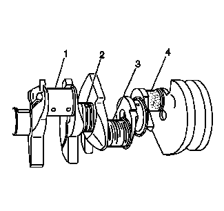
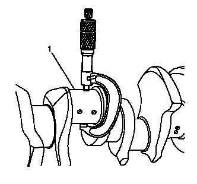
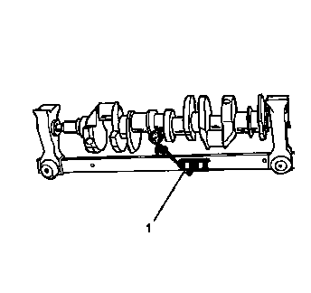
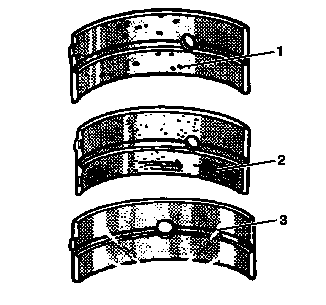
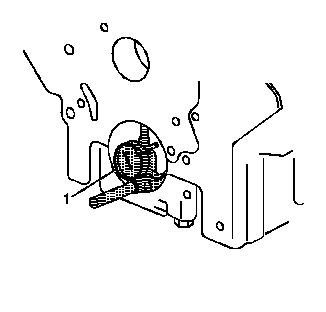

曲轴和轴承的清洁与检查
- • EN-8087气缸检查规
- • EN-45059角度测量仪
- • GE-7872磁性座千分表组件
专用工具
有关当地同等工具的信息，参见
专用工具。
-
 1.用溶剂清洗曲轴 (1)。注意:在操作曲轴时要小心。避免损坏曲轴位置磁阻环的轴承面或凸角。损坏曲轴位置磁阻环的齿可能会影响车载诊断 (OBD) II 系统的性能。
1.用溶剂清洗曲轴 (1)。注意:在操作曲轴时要小心。避免损坏曲轴位置磁阻环的轴承面或凸角。损坏曲轴位置磁阻环的齿可能会影响车载诊断 (OBD) II 系统的性能。 - 2.彻底清洁所有机油油道并检查是否有堵塞物或毛刺。
-
3.使用压缩空气干燥曲轴。警告：请参见 有关安全眼镜的警告。
-
4.目视检查曲轴外部是否损坏。注意:磁阻环齿在上升缘和下降缘不应存在缺陷。磁阻环齿的缺陷可能会影响 OBD II 系统的性能。
-
5.检查曲轴轴颈是否磨损（1）。轴颈应光滑，无划伤、磨损或损坏迹象。
- 6.检查曲轴轴颈是否有凹槽或划伤（2）。
- 7.检查曲轴轴颈是否有划伤或磨损（3）。
- 8.检查曲轴轴颈是否有点蚀或嵌入轴承材料（4）。
曲轴的清洁与检查
-
1.测量曲轴轴颈（1）的不圆度。
- 2.测量曲轴轴颈是否有锥度。
-
3.测量曲轴径向跳动量。用V形木块支撑曲轴的前、后轴颈。
- 4.使用GE-7872千分表(1) 测量前、后中间轴颈处的曲轴跳动量。
- 5.使用GE-7872千分表测量曲轴后法兰的跳动度。
- 6.如果测量值未在规定范围内，则更换曲轴。参见发动机机械系统规格（LI6）、发动机机械系统规格。
曲轴的测量
-
1.检查曲轴轴承是否有凹坑或凹槽 (1)。轴瓦上出现磨平的部位也表明存在疲劳磨损。
-
注意:
- • 必须适当分离、标记或摆放曲轴轴承，以确保恢复它们的原始位置和状态（如适用）。
- • 如果曲轴轴承故障不是因正常磨损造成，则查找其原因。检查曲轴或连杆轴承孔。
- 2.检查曲轴轴承是否有严重划痕或变色 (2)。
- 3.检查曲轴轴承上是否有污物或碎屑嵌入轴承材料。
- 4.检查曲轴轴承是否未正确就位，表现为轴承 (3) 有发亮、磨光的部位。
如果轴承的下半部分磨损或损坏，则上下半部都应更换。一般情况下，如果下半部分适合使用，则上半部分也应适合使用。
-
5.使用下面的程序检查连杆轴承孔或曲轴主轴承孔：
- 5.1 使用EN-45059测量仪将底板紧固至规格。
- 5.2 使用EN-8087量表(1) 测量轴承孔的锥度和不圆度。
- 5.3 不应存在锥度或不圆度。